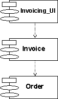

Guidelines:
Component Dependency

Dependency |
A
dependency from a component A to a component B indicates component A
has a compilation dependency, or a run-time dependency on B. |
Topics
Explanation
The most important use of a dependency relationship is to represent
compilation dependencies between components. A compilation dependency exists
from one component to the components that are needed to compile the component.
In C++, for example, the compilation dependencies are indicated with #include
statements. In Ada, compilation dependencies are indicated by the with clause.
In Java the compilation dependency is indicated by the import statement. In
general there should be no cyclical compilation dependencies.
Example:
The following component diagram illustrates the compilation
dependencies between components.

The component Invoicing_UI (the top), requires Invoice,
which requires Order to compile.
Copyright
© 1987 - 2001 Rational Software Corporation
|  Artifacts >
Artifacts >
 Implementation Artifact Set >
Implementation Artifact Set >
 Implementation Model... >
Implementation Model... >
 Component >
Component >
 Guidelines >
Guidelines >